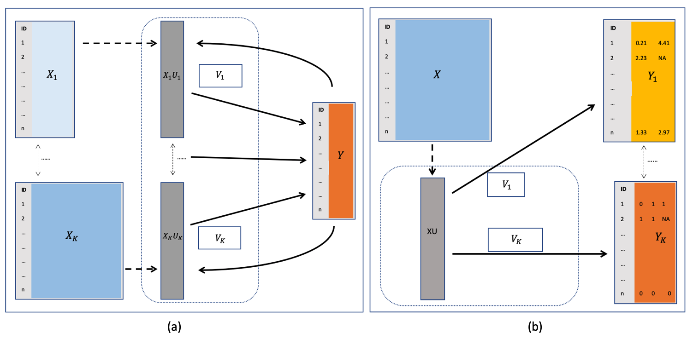
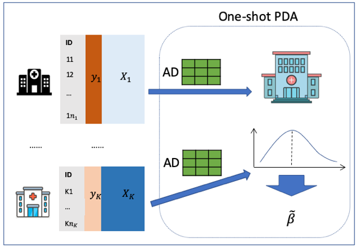
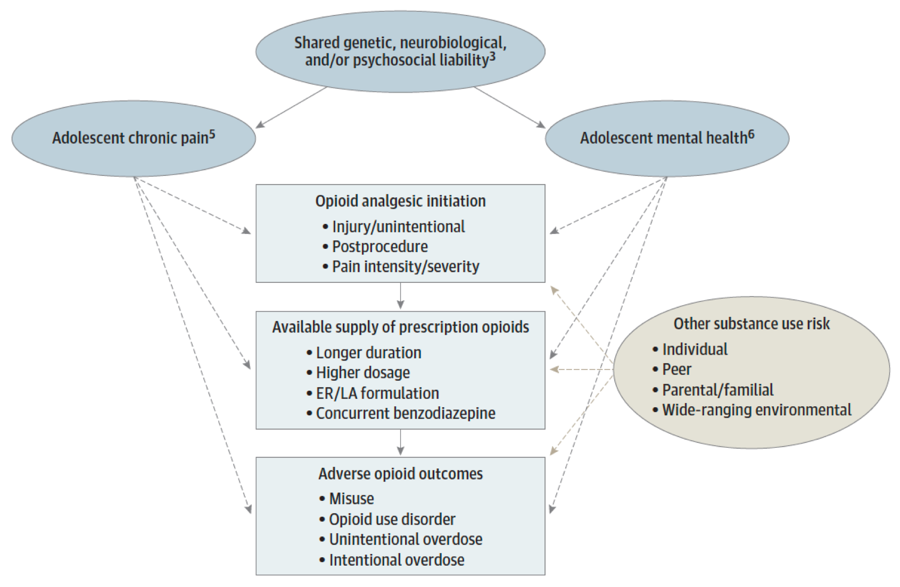
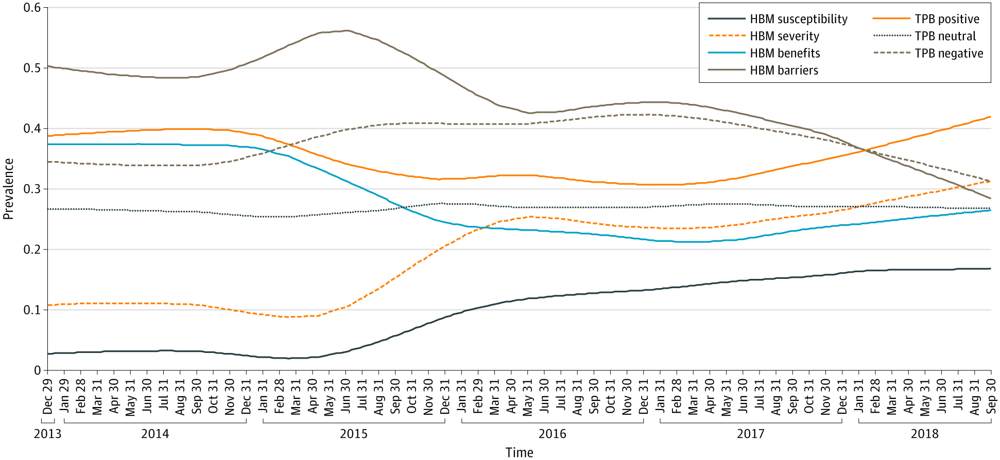
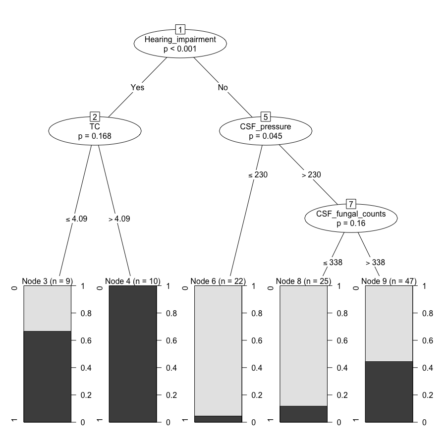

<!DOCTYPE html PUBLIC "-//W3C//DTD XHTML 1.1//EN"
  "http://www.w3.org/TR/xhtml11/DTD/xhtml11.dtd">
<html xmlns="http://www.w3.org/1999/xhtml" xml:lang="en">
<head>
<meta name="generator" content="jemdoc, see http://jemdoc.jaboc.net/" />
<meta http-equiv="Content-Type" content="text/html;charset=utf-8" />
<link rel="stylesheet" href="jemdoc.css" type="text/css" />
<title></title>
</head>
<body>
<table summary="Table for page layout." id="tlayout">
<tr valign="top">
<td id="layout-menu">
<div class="menu-category">menu</div>
<div class="menu-item"><a href="index.html">Home</a></div>
<div class="menu-item"><a href="research.html" class="current">Research</a></div>
<div class="menu-item"><a href="publication.html">Publication</a></div>
<div class="menu-item"><a href="CV.pdf">CV</a></div>
<div class="menu-item"><a href="life.html">Life</a></div>
</td>
<td id="layout-content">
<p><br /></p>
<h1>Statistical methodology for multi-view data integration</h1>
<p>Multi-view data, also called multi-modal, or vertically distributed data sets, are the data that contains distinct but related sets of characteristics on the same set of subjects.  My dissertation focuses on improving the prediction of multi-view data using reduced-rank based models.</p>
<ul>
<li><p><a href="https://academic.oup.com/biostatistics/article/17/3/468/1743976,">Canonical Variate Regression</a> for multi-view covariates.</p>
</li>
</ul>
<p>It connects the unsupervised canonical correlation analysis
(CCA) and generalized reduced-rank regression (RRR), see Figure (a). Also check the R package <a href="https://cran.r-project.org/web/packages/CVR/index.html">CVR</a> on CRAN.</p>
<table class="imgtable"><tr><td>
&nbsp;</td>
<td align="left"></td></tr></table>
<ul>
<li><p><a href="https://doi.org/10.1016/j.jmva.2018.04.011">Leveraging mixed-type and incomplete outcomes via a generalized reduced rank regression</a> for multi-view responses. </p>
</li>
</ul>
<p>The response variables are dependent, but could follow different distributions (i.e. gaussian, binomial, Poisson) and subject to missing values, see Figure (b). Also check the R package <a href="https://cran.r-project.org/web/packages/rrpack/index.html">rrpack</a> on CRAN .</p>
<h1>Privacy-preserving distributed algorithms (PDAs)</h1>
<p>Data may be collected from subjects that are distributed at multiple sites. These horizontally distributed data sets enable analyses being potentially  conducted with larger sample size and better generalizability. A typical example is the healthcare data that are stored at multiple institutions within a clinical research network. However, due to regulations protecting the privacy of healthcare data, direct sharing of
patient-level data across institutions may be challenging. Privacy-preserving distributed algorithms (PDAs) that are communication-efficient, i.e. only require one or two iterations of data communication, is thus desirable.</p>
<table class="imgtable"><tr><td>
&nbsp;</td>
<td align="left"></td></tr></table>
<ul>
<li><p>We proposed a One-shot Distributed Algorithm for Cox regression (ODAC), see <a href="https://doi.org/10.1093/jamia/ocaa044">Learning from local to global: An efficient distributed algorithm for modeling time-to-event data</a>, published at <i>JAMIA</i>.</p>
</li>
<li><p>See also the <a href="https://doi.org/10.1093/jamia/ocz199">ODAL</a> algorithm for logistic regression, and more methods are implemented in our <a href="https://github.com/Penncil/pda">pda</a> package on github.</p>
</li>
</ul>
<p>In particular, most of the existing distributed algorithms used in medical informatics settings assumed homogeneity
across clinical sites (i.e., i.i.d. assumption), which does not hold in many settings. Accounting for the between-
site heterogeneity is both important and challenging when integrating multi-site data.</p>
<ul>
<li><p>Distributed Proportional Likelihood Ratio Model with Application to Data Integration across Clinical Sites. <i>Under review</i>.</p>
</li>
<li><p><a href="https://www.medrxiv.org/content/10.1101/2020.11.17.20220681v1">An efficient distributed algorithm with application to COVID-19 data from heterogeneous clinical sites</a>.                      </p>
</li>
<li><p>We are working on a <a href="https://www.medrxiv.org/content/10.1101/2020.11.16.20230730v1">Lossless Distributed Linear Mixed Model with Application to Integration of Heterogeneous Healthcare Data</a>. This method is being used to integrate data from multiple international data sources to study the hospital length of stay of over 100,000 COVID-19 patients.</p>
</li>
</ul>
<h1>Meta-analysis methods</h1>
<ul>
<li><p><a href="https://doi.org/10.1101/2020.07.27.20161562">Accounting for small-study effects using a bivariate trim and fill meta-analysis procedure</a>, on <i>medRxiv</i>. Also check the R package <a href="https://cran.r-project.org/web/packages/xmeta/index.html">xmeta</a> on CRAN.</p>
</li>
<li><p>EMBRACE: an EM-based Bias Reduction Approach through Copas-Model Estimation for Quantifying the evidence of selective publishing in network meta-analysis, <i>Under review</i>.</p>
</li>
</ul>
<h1>Collaborations</h1>
<h3>Opioid use and mental health outcomes</h3>
<ul>
<li><p>See an overview of the <a href="https://www.cdc.gov/drugoverdose/opioids/prescribed.html">opioid overdose epdemic</a> by the CDC.</p>
</li>
<li><p>See below for a Proposed Associations Among Chronic Pain, Mental Health, and Adverse Outcomes Associated With Opioid Prescription from <a href="https://jamanetwork.com/journals/jamapsychiatry/article-abstract/2768366">Battaglia, Quinn &amp; Groenewald, 2020</a>, <i>JAMA Psychiatry</i>.</p>
</li>
</ul>
<table class="imgtable"><tr><td>
&nbsp;</td>
<td align="left"></td></tr></table>
<ul>
<li><p>We analyzed the <a href="https://cebp.aacrjournals.org/content/29/11/2126">Risk of persistent opioid use following major surgery in matched samples of patients with and without cancer</a>, using the  data from the University of Pennsylvania Health System.</p>
</li>
<li><p>We are working on analyzing the association of prescription opioid use with suicide attempts using  statewide medical claims data. </p>
</li>
</ul>
<h3>Pharmacovigilance: vaccine and drug safety  </h3>
<ul>
<li><p>The association of Guillain-Barre syndrome and other adverse events using data from a passive surveillance system (<a href="https://vaers.hhs.gov/">VAERS</a>), <i>Under revision</i>.</p>
</li>
<li><p><a href="https://jamanetwork.com/journals/jamanetworkopen/fullarticle/2772917">Deep learning and behavioral theory: an improved analytic method to understand HPV vaccination intentions from Twitter discussion</a>, published at <i>JAMA Network Open</i>. See below for HPV vaccine-related Twitter Posts: Trend of Theoretical Constructs After Removing Seasonal Effect and Random Noise. HPV, human papillomavirus; HBM, health belief model; TPB, theory of planned behaviors.</p>
</li>
</ul>
<table class="imgtable"><tr><td>
&nbsp;</td>
<td align="left"></td></tr></table>
<ul>
<li><p><a href="https://doi.org/10.1038/s41746-019-0102-4">Leveraging deep learning to understand health beliefs about the Human Papillomavirus Vaccine from social media</a>, published at <i>NPJ digital medicine</i>.</p>
</li>
</ul>
<h3>Neurological studies</h3>
<ul>
<li><p>We used random forests to find Predictors of post-infectious inflammatory response syndrome (PIIRS) in HIV-negative immunocompetent cryptococcal meningitis, to appear at <i>Journal of Neurology, Neurosurgery, and Psychiatry</i>. See below for the Decision tree for PIIRS prediction. Conditional inference decision tree is created using hearing impairment, CSF pressure, CSF fungal counts and TC, as selected by the random forests. An oval represents a split on a specific variable, along with the corresponding p-value. All variables are included in the decision tree regardless of the significance of their splits. The ratio in each leaf node is the observed proportion of PIIRS in that group. The splits based on CSF fungal counts and TC are not significant, though still show certain separation in the leaf nodes.</p>
</li>
</ul>
<table class="imgtable"><tr><td>
&nbsp;</td>
<td align="left"></td></tr></table>
<ul>
<li><p><a href="https://doi.org/10.3389/fneur.2019.00464">Elevated plasma homocysteine levels in anti-N-methyl-D-aspartate receptor encephalitis</a>, published at <i>Frontiers in Neurology</i>.</p>
</li>
</ul>
<h3>Healthcare quality rating</h3>
<p>Part of my work at the <a href="https://health.uconn.edu/population-health/">Center for Population Health</a> at UConn Health Center was healthcare quality rating, see <a href="https://healthscorect.com/">HealthscoreCT</a>. We mined the Connecticut All Payers Claims Database (<a href="https://www.apcdcouncil.org/">APCD</a>) to rate the healthcare quality of organizations. </p>
<p><br />
<br />
<br /></p>
</td>
</tr>
</table>
</body>
</html>
